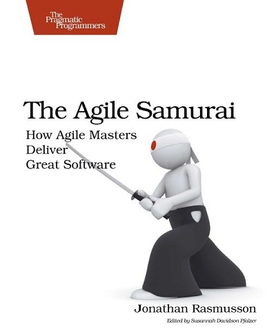
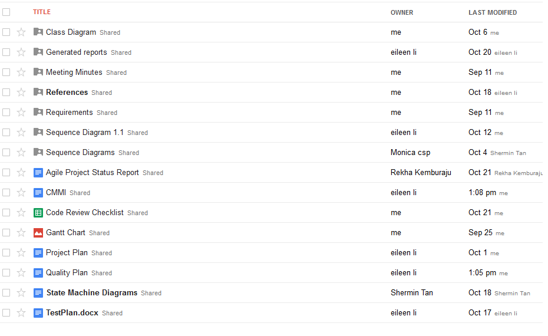
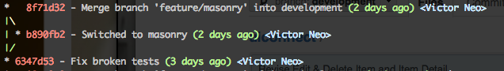
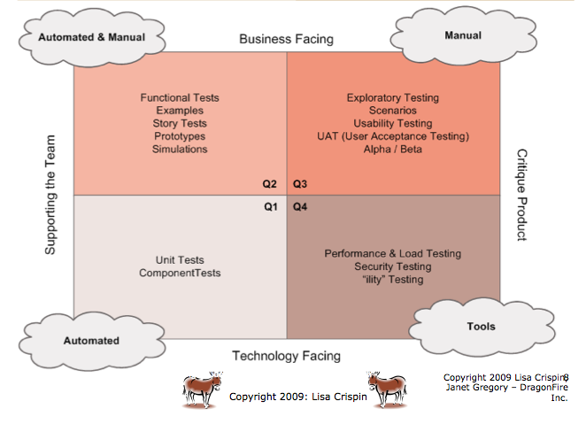
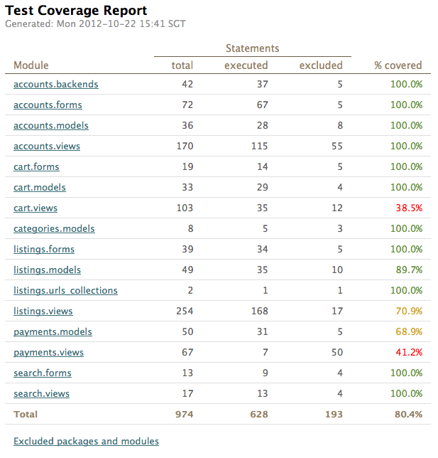
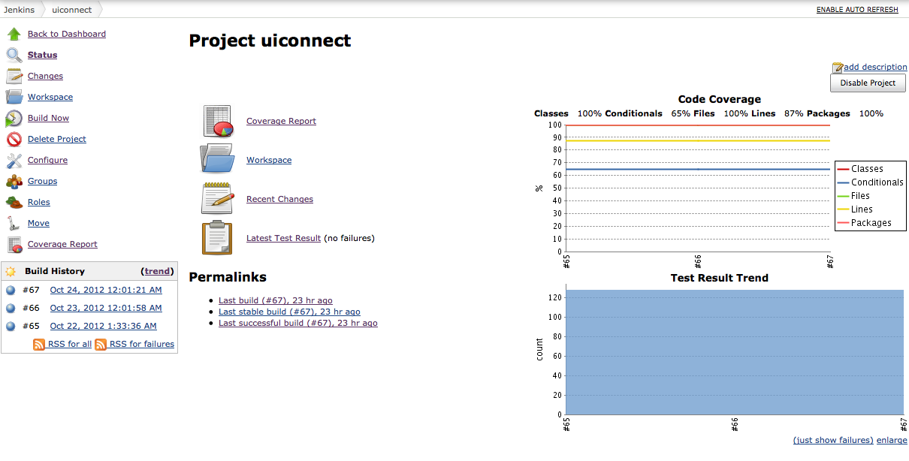
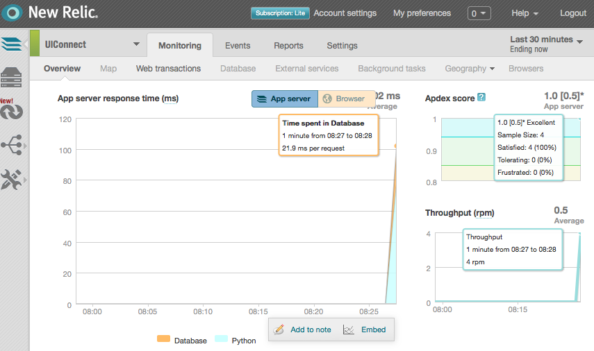

trends
by team UI Connect
project demo
Main Technology
Django
Python based Web development framework
Chosen because it allows rapid prototyping and familiarity
Javascript libraries
JQuery
Aviary
Money
(currency conversion)
Project Planning
Methodology, Estimation (Waterfall and Agile)
Development Methodolody
Agile Methodology
Customer facing website
Changes to suit customer needs happens frequently
Agile Samurai

Project Estimation
Function Point Analysis
4411.8 LoC (using Perl)
Target 2.5 months with compression factor of 0.77, acceptable
Cocomo II
4.56 Months
Project Estimation (Agile)
Master Story List
Each use case is roughly equals to a Story
Master Story List is simply a list of all stories
Points are assigned to a story depending on difficulty of implementation
1 is easy, 8 is difficult
Sprints
2 academic weeks = 1 Sprint
Stories are allocated to each Sprint such that the points are well distributed
Sprint 1
Red: Expected
Blue: Actual
Sprint 2
Red: Expected
Blue: Actual
Sprint 3
Red: Expected
Blue: Actual
Sprint 4
Red: Expected
Blue: Actual
Requirements and Documents

Risk Management
Risk Management
Discussed during meetings
Reference: lecture slides
Each member suggests possible risks based on personal experience and area of expertise
Objectives of Discussion
Gain a common understanding on the different types of risks
Members can take note of them when making estimations
Development Process
Development Process
Source Control
Github as central repository
All developers have the same development environment
No fixed editor / IDE, developers are free to use any editor they prefer (vim, Notepad++)
Managing Dependencies
Installing dependencies with one command:
pip install -r requirements.txt
Code Branching
Git Flow
Well documented branching model for git
Feature branch for new features

Testing
Agile Testing Quadrants

Quadrant 1
Unit tests
Developers are responsible for writing the unit tests whenever new features are developed
The team seeks to achieve at least 90% test coverage
Continuous Integration
The team has a CI server (Jenkins) that periodically runs all unit tests and emails if failures are detected
Quadrant 1: Unit Test Code Coverage

Quadrant 1: Continuous Integration Server

Quadrant 2 and 3
Qudrant 2: Functional tests with Selenium
Automated functional tests
Tests are exported as Python code and checked in with the main code repository
Qudrant 3: User Acceptance Test
QA team created the UAT test plans
Empty test plans as they are no actual "clients"
Quadrant 4
Load testing
Siege, which launches thousands of simulaneous connections to a server is used.
Executed on the staging server hosted on Amazon EC2 which simulates the actual deployment server
Performance Testing
An external service, New Relic is used
Allows the team to check how much time of the request is spent in database queries etc.
Quadrant 4: Performance Testing

Questions and Answers